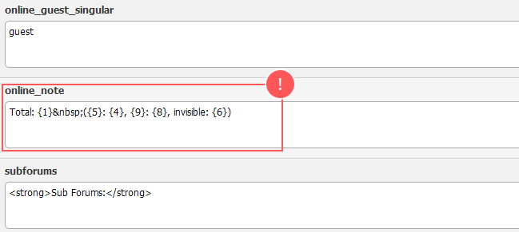

» Editing "Who Is Online"
1.) Admin CP » Configuration » Languages » English (American) » Options » Edit Language Variables, find index.lang.php
Scroll down to the bottom and find online_note

Replace your current code by the one you see below (it's same as shown the on the above screenshot):
Total:{1} ({5}:{4},{9}:{8}, invisible:{6})